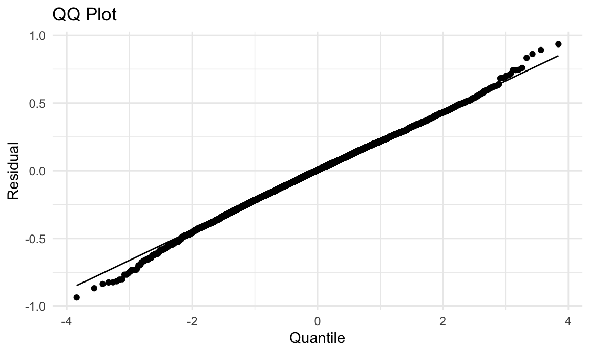

For continuous variables, we use mean and standard deviation (std) to describe the distribution in overall samples, samples of desirable cholesterol level (defined as “control”), and samples of above-desirable cholesterol level (defined as “case”). Then, we use t-test to examine whether the means of these variables are significantly different between case group and control group (significance level = 0.05).
# mean and std for continuous variables, overall
list_conti_all = list(
age = model_df$age,
bmi = model_df$bmi,
sleep_hour = model_df$sleep_hour,
cotinine = model_df$cotinine,
chol_cat = model_df$chol_cat
) |>
as.data.frame()
list_conti_all_clean =
list_conti_all[-5] |>
lapply(na.omit)
mean_all = sapply(list_conti_all_clean, mean) |>
as.data.frame() |>
rename(overall_mean = "sapply(list_conti_all_clean, mean)")
std_all = sapply(list_conti_all_clean, sd) |>
as.data.frame() |>
rename(overall_std = "sapply(list_conti_all_clean, sd)")
# p-value of t test for continuous variables
t_test = function(variable) {
t_test_result = t.test(list_conti_all[[variable]] ~ list_conti_all$chol_cat)
return(data.frame(
variable = variable,
p_value = t_test_result$p.value
))
}
p_value =
lapply(c("age", "bmi", "sleep_hour", "cotinine"), t_test) |>
bind_rows()
# mean and std for all continuous variables, among samples of desirable cholesteral level (named them as "control")
list_conti_desire = list(
age = desire_df$age,
bmi = desire_df$bmi,
sleep_hour = desire_df$sleep_hour,
cotinine = desire_df$cotinine
) |>
as.data.frame() |>
lapply(na.omit)
mean_desire = sapply(list_conti_desire, mean) |>
as.data.frame() |>
rename(control_mean = "sapply(list_conti_desire, mean)")
std_desire = sapply(list_conti_desire, sd) |>
as.data.frame() |>
rename(control_std = "sapply(list_conti_desire, sd)")
# mean and std for all continuous variables, among samples of above-desirable cholesterol level (named them as "case")
list_conti_ab_desire = list(
age = ab_desire_df$age,
bmi = ab_desire_df$bmi,
sleep_hour = ab_desire_df$sleep_hour,
cotinine = ab_desire_df$cotinine
) |>
as.data.frame() |>
lapply(na.omit)
mean_ab_desire = sapply(list_conti_ab_desire, mean) |>
as.data.frame() |>
rename(case_mean = "sapply(list_conti_ab_desire, mean)")
std_ab_desire = sapply(list_conti_ab_desire, sd) |>
as.data.frame() |>
rename(case_std = "sapply(list_conti_ab_desire, sd)")# combind - continuous
conti_des_df =
cbind(mean_all, std_all, mean_desire, std_desire, mean_ab_desire, std_ab_desire, p_value) |>
select(overall_mean, overall_std, p_value, control_mean, control_std, case_mean, case_std) |>
knitr::kable(digits = 3)
conti_des_df| overall_mean | overall_std | p_value | control_mean | control_std | case_mean | case_std | |
|---|---|---|---|---|---|---|---|
| age | 49.414 | 18.302 | 0.000 | 48.014 | 19.312 | 52.326 | 15.604 |
| bmi | 29.914 | 7.536 | 0.150 | 29.993 | 7.870 | 29.750 | 6.787 |
| sleep_hour | 7.593 | 1.667 | 0.072 | 7.616 | 1.692 | 7.546 | 1.612 |
| cotinine | 55.683 | 128.581 | 0.026 | 57.823 | 131.881 | 51.232 | 121.334 |
For binary and categorical variables, we use count (n) and percentage (pct) to describe the distribution in overall samples, samples of desirable cholesterol level (defined as “control”), and samples of above-desirable cholesterol level (defined as “case”). Then, we use chi-sq test to examine whether the distribution of these variables are significantly different between case group and control group (significance level = 0.05).
# n and pct for categorical variables, chi-sq test, overall
list_cat_all = list (
gender = model_df$gender,
race = model_df$race,
marital = model_df$marital_status,
edu = model_df$education_level_20,
poverty = model_df$poverty_level,
phy = model_df$physical_activity,
alcohol = model_df$alcohol_use_cat,
chol_cat = model_df$chol_cat
) |>
as.data.frame()
list_cat_all_clean =
list_cat_all[-8] |>
lapply(na.omit)
cat_vars = names(list_cat_all_clean)
count_all_function = function(variable) {
table_value = table(list_cat_all[[variable]], list_cat_all$chol_cat)
chi_sq_test = chisq.test(table_value)
count = sapply(unique(list_cat_all_clean[[variable]], na.rm = TRUE), function(cat) sum(list_cat_all_clean[[variable]] == cat, na.rm = TRUE))
total = sum(count)
pct = count / total
result_df = tibble(
variable = names(count),
n = count,
pct = pct,
p_value = chi_sq_test$p.value
)
return(result_df)
}
cat_count_chisq = lapply(cat_vars, count_all_function) |>
bind_rows()
# n and pct for categorical variables, among samples of desirable cholesteral level (named them as "control")
list_cat_ctrl = list (
gender = desire_df$gender,
race = desire_df$race,
marital = desire_df$marital_status,
edu = desire_df$education_level_20,
poverty = desire_df$poverty_level,
phy = desire_df$physical_activity,
alcohol = desire_df$alcohol_use_cat
) |>
as.data.frame() |>
lapply(na.omit)
cat_vars_ctrl = names(list_cat_ctrl)
count_ctrl_function = function(variable) {
count = sapply(unique(list_cat_ctrl[[variable]], na.rm = TRUE), function(cat) sum(list_cat_ctrl[[variable]] == cat, na.rm = TRUE))
total = sum(count)
pct = count / total
result_df = tibble(
variable = names(count),
control_n = count,
control_pct = pct
)
return(result_df)
}
cat_count_ctrl = lapply(cat_vars_ctrl, count_ctrl_function) |>
bind_rows()
# n and pct for categorical variables, among samples of above-desirable cholesterol level (named them as "case")
list_cat_case = list (
gender = ab_desire_df$gender,
race = ab_desire_df$race,
marital = ab_desire_df$marital_status,
edu = ab_desire_df$education_level_20,
poverty = ab_desire_df$poverty_level,
phy = ab_desire_df$physical_activity,
alcohol = ab_desire_df$alcohol_use_cat
) |>
as.data.frame() |>
lapply(na.omit)
cat_vars_case = names(list_cat_case)
count_case_function = function(variable) {
count = sapply(unique(list_cat_case[[variable]], na.rm = TRUE), function(cat) sum(list_cat_case[[variable]] == cat, na.rm = TRUE))
total = sum(count)
pct = count / total
result_df = tibble(
variable = names(count),
case_n = count,
case_pct = pct
)
return(result_df)
}
cat_count_case = lapply(cat_vars_case, count_case_function) |>
bind_rows()cat_des_df =
bind_cols(cat_count_chisq, cat_count_ctrl, cat_count_case) |>
select(-variable...5, -variable...8) |>
rename(variable = variable...1) |>
knitr::kable(digits = 3)
cat_des_df| variable | n | pct | p_value | control_n | control_pct | case_n | case_pct |
|---|---|---|---|---|---|---|---|
| Female | 4199 | 0.515 | 0.000 | 2725 | 0.494 | 1176 | 0.444 |
| Male | 3962 | 0.485 | 0.000 | 2786 | 0.506 | 1474 | 0.556 |
| Non-Hispanic Asian | 977 | 0.120 | 0.000 | 597 | 0.108 | 963 | 0.363 |
| Non-Hispanic White | 2878 | 0.353 | 0.000 | 1915 | 0.347 | 607 | 0.229 |
| Other Race | 396 | 0.049 | 0.000 | 260 | 0.047 | 380 | 0.143 |
| Hispanic | 1855 | 0.227 | 0.000 | 1491 | 0.271 | 564 | 0.213 |
| Non-Hispanic Black | 2055 | 0.252 | 0.000 | 1248 | 0.226 | 136 | 0.051 |
| Never married | 1497 | 0.192 | 0.000 | 1132 | 0.219 | 1601 | 0.613 |
| Married/Living with Partner | 4549 | 0.584 | 0.000 | 1093 | 0.211 | 365 | 0.140 |
| Widowed/Divorced/Separated | 1740 | 0.223 | 0.000 | 2948 | 0.570 | 647 | 0.248 |
| College graduate or above | 1919 | 0.247 | 0.005 | 1218 | 0.236 | 701 | 0.268 |
| 9-11th grade | 850 | 0.109 | 0.005 | 571 | 0.110 | 279 | 0.107 |
| Some college or AA degree | 2551 | 0.328 | 0.005 | 1694 | 0.328 | 202 | 0.077 |
| High school graduate/GED or equivalent | 1873 | 0.241 | 0.005 | 1298 | 0.251 | 857 | 0.328 |
| Less than 9th grade | 591 | 0.076 | 0.005 | 389 | 0.075 | 575 | 0.220 |
| Below 185% of Poverty Guidelines | 3388 | 0.525 | 0.000 | 2209 | 0.509 | 1179 | 0.557 |
| Below 130% of Poverty Guidelines | 2085 | 0.323 | 0.000 | 1472 | 0.339 | 613 | 0.290 |
| Between 130% and 185% of Poverty Guidelines | 986 | 0.153 | 0.000 | 661 | 0.152 | 325 | 0.154 |
| Vigorous activity | 3499 | 0.429 | 0.014 | 2423 | 0.440 | 656 | 0.248 |
| Moderate activity | 2696 | 0.330 | 0.014 | 1778 | 0.323 | 918 | 0.346 |
| Light/Unknown activity | 1966 | 0.241 | 0.014 | 1310 | 0.238 | 1076 | 0.406 |
| Light Drinker | 3424 | 0.493 | 0.000 | 2378 | 0.507 | 1046 | 0.462 |
| Moderate Drinker | 2573 | 0.370 | 0.000 | 1736 | 0.370 | 837 | 0.370 |
| Heavy Drinker | 955 | 0.137 | 0.000 | 573 | 0.122 | 382 | 0.169 |
In this study, out response variable is total cholesterol level, and our explanatory variable is cotinine. We decide to analyze the association step by step. (significance level = 0.05)
model_df |>
ggplot(aes(x = cotinine, y = total_cholesterol)) + geom_point()## Warning: Removed 1 rows containing missing values (`geom_point()`).Based on the scatterplot, we can find a slightly negative linear trend. So, we first decide to use linear regression model.
Model 1: total_cholesterol = cotinine
fit_1 = lm(total_cholesterol ~ cotinine, data = model_df)
fit_1 |>
broom::tidy() |>
knitr::kable(digits = 3)| term | estimate | std.error | statistic | p.value |
|---|---|---|---|---|
| (Intercept) | 185.230 | 0.495 | 374.539 | 0.000 |
| cotinine | -0.011 | 0.004 | -3.219 | 0.001 |
model_df |>
modelr::add_residuals(fit_1) |>
ggplot(aes(sample = resid)) +
stat_qq() +
stat_qq_line()## Warning: Removed 1 rows containing non-finite values (`stat_qq()`).## Warning: Removed 1 rows containing non-finite values (`stat_qq_line()`).
We can see that cotinine is significantly associated with total cholesterol level. We also check the qq-plot and find that the residuals among followed a normal distribution, which indicates a suitability of using linear regression.
# fit_2 = lm(total_cholesterol ~ cotinine + age + gender + race + marital_status + education_level_20 + poverty_level + physical_activity + alcohol_use_cat, data = model_df)
fit_2 = lm(total_cholesterol ~ cotinine + age + marital_status + education_level_20 + physical_activity + alcohol_use_cat, data = model_df)
fit_2 |>
broom::tidy() |>
knitr::kable(digits = 3)| term | estimate | std.error | statistic | p.value |
|---|---|---|---|---|
| (Intercept) | 191.502 | 3.021 | 63.390 | 0.000 |
| cotinine | -0.010 | 0.004 | -2.552 | 0.011 |
| age | 0.020 | 0.034 | 0.594 | 0.553 |
| marital_statusNever married | -8.047 | 1.402 | -5.739 | 0.000 |
| marital_statusWidowed/Divorced/Separated | 2.727 | 1.284 | 2.124 | 0.034 |
| education_level_20College graduate or above | 4.847 | 1.884 | 2.572 | 0.010 |
| education_level_20High school graduate/GED or equivalent | -1.798 | 1.850 | -0.972 | 0.331 |
| education_level_20Less than 9th grade | 3.746 | 2.563 | 1.461 | 0.144 |
| education_level_20Some college or AA degree | 1.857 | 1.778 | 1.044 | 0.296 |
| physical_activityModerate activity | 0.809 | 1.362 | 0.594 | 0.552 |
| physical_activityVigorous activity | -0.530 | 1.346 | -0.394 | 0.694 |
| alcohol_use_catLight Drinker | -9.541 | 1.527 | -6.249 | 0.000 |
| alcohol_use_catModerate Drinker | -6.429 | 1.576 | -4.079 | 0.000 |
adding gender, rqce, poverty_level –> not significant
fit1 = glm(chol_cat ~ cotinine, data = model_df, family = binomial())
fit1 |>
broom::tidy() |>
knitr::kable(digits = 3)| term | estimate | std.error | statistic | p.value |
|---|---|---|---|---|
| (Intercept) | -0.71 | 0.026 | -27.604 | 0.00 |
| cotinine | 0.00 | 0.000 | -2.166 | 0.03 |
fit2 = glm(chol_cat ~ cotinine + age + gender + race + marital_status + education_level_20 + poverty_level, family = binomial(), data = model_df)
fit3 = glm(chol_cat ~ cotinine + age + gender + race + marital_status + education_level_20 + poverty_level + physical_activity + alcohol_use_cat, data = model_df, family = binomial())
fit3 |>
broom::tidy() |>
knitr::kable(digits = 3)| term | estimate | std.error | statistic | p.value |
|---|---|---|---|---|
| (Intercept) | -0.581 | 0.182 | -3.187 | 0.001 |
| cotinine | 0.000 | 0.000 | 0.480 | 0.631 |
| age | 0.008 | 0.002 | 3.999 | 0.000 |
| genderMale | -0.345 | 0.062 | -5.557 | 0.000 |
| raceNon-Hispanic Asian | 0.206 | 0.120 | 1.725 | 0.085 |
| raceNon-Hispanic Black | -0.285 | 0.093 | -3.047 | 0.002 |
| raceNon-Hispanic White | -0.125 | 0.084 | -1.489 | 0.136 |
| raceOther Race | 0.183 | 0.144 | 1.270 | 0.204 |
| marital_statusNever married | -0.341 | 0.089 | -3.847 | 0.000 |
| marital_statusWidowed/Divorced/Separated | 0.061 | 0.075 | 0.821 | 0.412 |
| education_level_20College graduate or above | 0.077 | 0.117 | 0.661 | 0.509 |
| education_level_20High school graduate/GED or equivalent | -0.091 | 0.111 | -0.820 | 0.412 |
| education_level_20Less than 9th grade | 0.190 | 0.159 | 1.192 | 0.233 |
| education_level_20Some college or AA degree | 0.031 | 0.108 | 0.287 | 0.774 |
| poverty_levelBelow 185% of Poverty Guidelines | 0.133 | 0.075 | 1.773 | 0.076 |
| poverty_levelBetween 130% and 185% of Poverty Guidelines | 0.145 | 0.093 | 1.562 | 0.118 |
| physical_activityModerate activity | 0.052 | 0.079 | 0.663 | 0.507 |
| physical_activityVigorous activity | 0.014 | 0.080 | 0.181 | 0.856 |
| alcohol_use_catLight Drinker | -0.494 | 0.088 | -5.607 | 0.000 |
| alcohol_use_catModerate Drinker | -0.302 | 0.089 | -3.377 | 0.001 |
test_df =
model_df |>
filter(gender == "Male")
fit_2 = lm(total_cholesterol ~ cotinine + age + gender + race + marital_status + education_level_20 + poverty_level + physical_activity + alcohol_use_cat, data = model_df)
fit_2 |>
broom::tidy() |>
knitr::kable(digits = 3)| term | estimate | std.error | statistic | p.value |
|---|---|---|---|---|
| (Intercept) | 195.282 | 3.486 | 56.025 | 0.000 |
| cotinine | 0.000 | 0.004 | 0.110 | 0.912 |
| age | 0.075 | 0.039 | 1.921 | 0.055 |
| genderMale | -9.746 | 1.176 | -8.289 | 0.000 |
| raceNon-Hispanic Asian | 3.676 | 2.347 | 1.566 | 0.117 |
| raceNon-Hispanic Black | -6.615 | 1.760 | -3.759 | 0.000 |
| raceNon-Hispanic White | -2.562 | 1.617 | -1.585 | 0.113 |
| raceOther Race | 1.556 | 2.807 | 0.554 | 0.579 |
| marital_statusNever married | -7.191 | 1.604 | -4.483 | 0.000 |
| marital_statusWidowed/Divorced/Separated | 2.010 | 1.456 | 1.380 | 0.168 |
| education_level_20College graduate or above | 3.231 | 2.230 | 1.449 | 0.147 |
| education_level_20High school graduate/GED or equivalent | -1.858 | 2.093 | -0.888 | 0.375 |
| education_level_20Less than 9th grade | 5.550 | 3.084 | 1.799 | 0.072 |
| education_level_20Some college or AA degree | 1.223 | 2.038 | 0.600 | 0.549 |
| poverty_levelBelow 185% of Poverty Guidelines | 2.416 | 1.415 | 1.707 | 0.088 |
| poverty_levelBetween 130% and 185% of Poverty Guidelines | 2.836 | 1.758 | 1.613 | 0.107 |
| physical_activityModerate activity | 1.171 | 1.511 | 0.775 | 0.439 |
| physical_activityVigorous activity | 0.801 | 1.518 | 0.528 | 0.598 |
| alcohol_use_catLight Drinker | -11.943 | 1.711 | -6.978 | 0.000 |
| alcohol_use_catModerate Drinker | -8.128 | 1.749 | -4.647 | 0.000 |